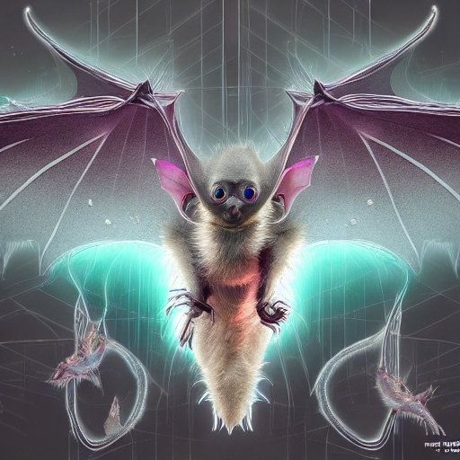

Description: The Shriekwing Bat is a small, nocturnal mammal with leathery wings and vibrant bioluminescent markings. It emits high-pitched shrieks to navigate and communicate with others of its kind. Shriekwing Bats are highly social creatures, often forming large colonies within dark, cavernous environments. They primarily feed on insects and small reptiles. They prefer to inhabit the expansive cave systems that riddle Tozathadax's rocky terrain, where they roost upside down from stalactites.They are insectivorous, with a preference for large beetles and flying insects. Shriekwing Bats are preyed upon by aerial predators such as the Razorbeak Raptor.They typically live for 15-20 standard Tozathadaxian years.
Planet: Tozethadax